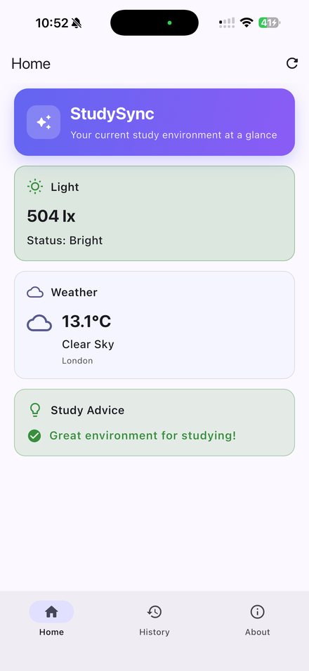
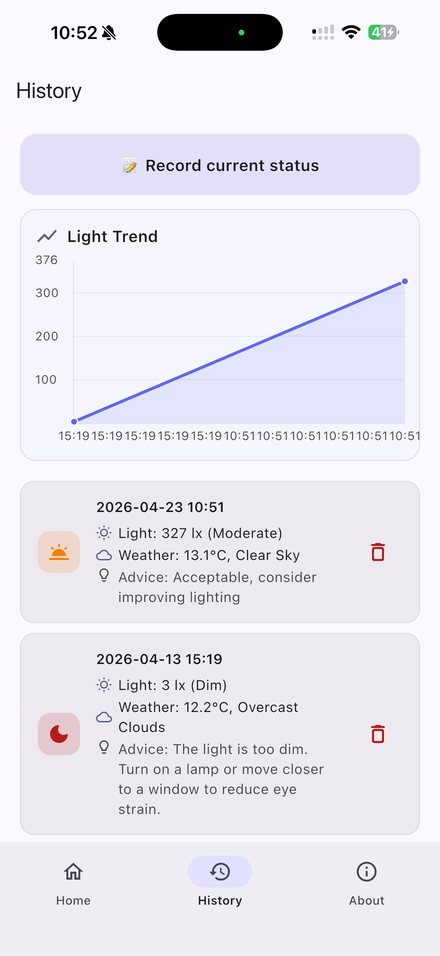
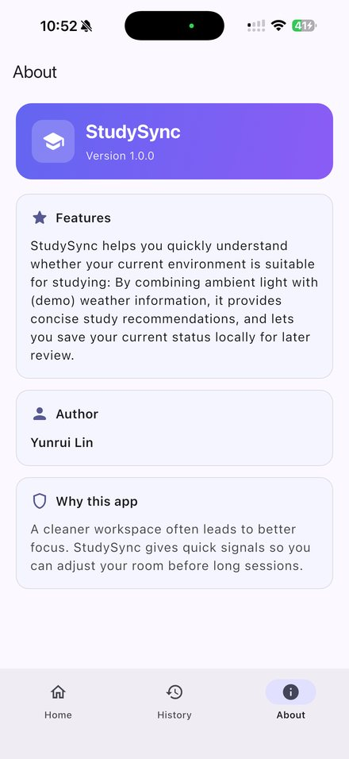

痛点 1
环境问题难以察觉
人眼会自动适应昏暗的光线，人也会逐渐"习惯"噪音，所以很少有人会主动意识到环境已经不适合学习了。
产品案例 · 个人项目
StudySync 用手机的摄像头和麦克风估算光线与噪音，结合当地天气给学习环境打一个 0–100 的分数；专注时持续监测，环境变差就提醒；记录越多，越能告诉你在哪里、什么时候学得最好。
↑ 演示模式，可直接操作
01用户与问题
目标用户是经常在图书馆、宿舍、教室、咖啡馆之间换地方自习的大学生。光线变暗、周围变吵都是慢慢发生的，等到觉得累、分心时，往往已经低效地学了很久。
人眼会自动适应昏暗的光线，人也会逐渐"习惯"噪音，所以很少有人会主动意识到环境已经不适合学习了。
"去图书馆还是在宿舍学？"、"晚上学效率更高吗？"这些问题很少有客观依据，只能靠印象判断。
计时类 App 只能记录"专注了多久"，却不能解释"为什么没专注下去"，用户也就不知道下次该改什么。
02从 v1 到 v2
v1 是我在 UCL CASA0015 课程中用 Flutter 做的手机 App。回头复盘时，我发现它更像一个"传感器演示"，还没有真正解决用户的问题。v2 在此基础上重做为网页版。
| v1 的做法 | 问题 | v2 的改动 |
|---|---|---|
| 只用亮度判断环境 | 学习环境不止光线，噪音同样关键 | 加入麦克风噪音检测，光线和噪音综合评分，并考虑短板效应 |
| 天气固定显示伦敦，且不参与判断 | 对其他城市的用户没有意义 | 按定位获取当地天气，并作为建议的上下文（如"外面阴天，窗边光线也不够"） |
| 建议只有"好 / 中 / 差"一句话 | 用户不知道具体该做什么 | 给出 1–3 条可执行建议，带目标数值（如"桌面照度最好在 300–500 lx"） |
| 检测是一次性的 | 学习过程中环境会变化 | 专注计时 + 持续监测：环境持续变差超过 20 秒就提醒 |
| 历史只有流水记录和一条折线 | 数据记了，但没有给出结论 | 历史洞察：最适合的地点和时段、不同环境下的专注完成率 |
| 需要安装 App；天气 API key 写在代码里 | 试用门槛高，还有密钥泄露风险 | 网页版打开即用；改用免 key 的 Open-Meteo 天气服务 |
03需求取舍
按"对用户的价值"和"实现成本"排序：高价值、低成本的先做；有价值但会分散焦点、或需要先验证的，明确地放到后面。
价值高，成本低
价值高，成本较高
需要先积累数据
以及原因
04评分模型
评分规则全部公开、可以解释，用户能看懂为什么得了这个分，也知道怎么提高。
总分取两项的平均，但不超过较低一项 + 15 分。环境很吵时，光线再好也不应该显示"适合专注"。
专注时，环境分连续 20 秒低于 60 分才提醒，回升到 70 分以上才解除，不会因为一声咳嗽就打断用户。
摄像头会自动曝光，麦克风也没有校准，所以读数是估算值，适合判断"偏暗 / 适宜 / 偏强"这样的区间，不能替代专业测量仪器。
05成功指标
环境分 ≥ 80 时完成的专注分钟数。它同时反映了"用户在专注"和"环境是好的"两件事。
看到环境分之后，用户是否真的开始学习。
收到提醒后 2 分钟内环境分回升的比例，用来验证假设 1：建议能否促使用户行动。
分环境档位对比，用来验证假设 2：好的环境是否带来更高的完成率。
06路线图
07v1 原型
2026 年 4 月完成：用摄像头画面估算亮度、显示伦敦的实时天气、记录历史并绘制趋势图。v2 的光线估算沿用了同一套映射算法。代码在仓库的 lib/ 目录里。



08我的角色
手机上体验最好。不想授权摄像头和麦克风？用演示数据也能走完整个流程。